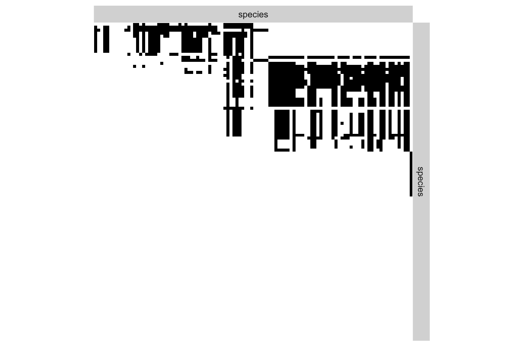
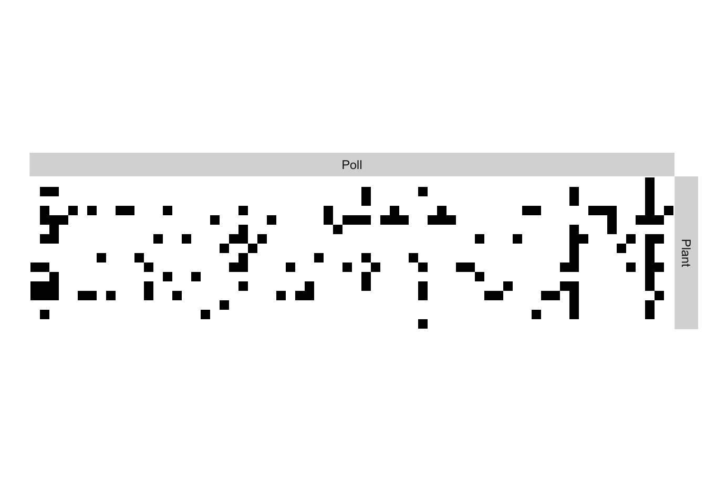

Modèles à blocs latents pour la détection de structure dans les réseaux écologiques
J. Aubert, P. Barbillon, S. Donnet, V. Miele
Préambule
Ce tutoriel illustre l’utilisation du package sbm (Chiquet, Donnet, and Barbillon 2020) pour rechercher des structures dans un réseau écologique. Le package s’installe depuis le CRAN ou depuis github pour une version en développement. Les packages ggplot2 (Wickham 2016), econetwork (Dray et al. 2020) et bipartite (Dormann, Gruber, and Fruend 2008) sont également requis pour les représentations graphiques ou des calculs de mesures.
suppressMessages(library(sbm))
suppressMessages(library(knitr))
suppressMessages(library(ggplot2))
suppressMessages(library(econetwork))
suppressMessages(library(bipartite))Réseau simple ou unipartite : exemple d’un réseau trophique
Les données
Nous considérons un réseau trophique entre espèces de la zone intertidale de la côte pacifique, accompagné d’informations sur les traits, tel que publié dans l’article de Kéfi et al. (2016).
Le jeu de données, disponible publiquement sur Dryad, consiste en une matrice d’adjacence (présence/absence) pour \(106\) espèces trouvées comme co-occurrant dans des études de structure de communauté sur différents sites rocheux intertidaux avec le même temps d’exposition aux vagues le long de 700 km de côtes du Chili central.
Les données ont été reformattées sous forme de matrice dans le fichier Chilean.rda et peuvent se charger à l’aide de la fonction load. La matrice d’adjacence se visualise grâce à la fonction sbm::plotMyMatrix.
load("dat/Chilean.rda")
plotMyMatrix(adjMat, dimLabels = list(row = "species", col = "species"))
Analyse statistique avec des modèles à blocs stochastiques
La fonction sbm::estimateSimpleSBM effectue l’inférence variationnelle d’un modèle à blocs stochastiques à partir d’une matrice décrivant un réseau. La matrice adjMat étant ici une matrice binaire (présence/absence), nous choisissons un modèle de Bernoulli (model = "bernoulli") pour la distribution des arêtes. Il s’agit de l’option par défaut, d’autres modèles de distribution tels que Poisson ou gaussien sont disponibles.
estimOptions = list(plot = FALSE)
my_model <- estimateSimpleSBM(adjMat, model = "bernoulli", dimLabels = list(row = "species",
col = "species"), estimOptions = list(verbosity = 0, plot = FALSE))Les modèles estimés au cours de la procédure sont disponibles dans my_model$storedModels. Le meilleur modèle peut être choisi à l’aide d’un critère ICL. Visualisons les modèles estimés :
storedModels <- my_model$storedModels
print(storedModels)## indexModel nbParams nbBlocks ICL loglik
## 1 1 1 1 -4136.897 -4132.238
## 2 2 5 2 -2743.488 -2722.521
## 3 3 11 3 -2239.258 -2192.666
## 4 4 19 4 -2040.274 -1958.740
## 5 5 29 5 -1877.705 -1751.910
## 6 6 41 6 -1784.991 -1605.620
## 7 7 55 7 -1736.472 -1494.206
## 8 8 71 8 -1758.204 -1443.725
## 9 9 89 9 -1786.712 -1390.704
## 10 10 109 10 -1847.561 -1360.705
## 11 11 131 11 -1919.232 -1332.212bestModel <- storedModels$nbBlocks[which.max(storedModels$ICL)]
ggplot(storedModels) + geom_point(aes(x = nbBlocks, y = ICL)) + geom_vline(xintercept = bestModel,
col = "orange", linetype = "dashed") + geom_hline(yintercept = storedModels$ICL[bestModel],
col = "orange", linetype = "dashed")
Le meilleur modèle, maximisant le critère ICL, est celui à 7 groupes.
On peut maintenant représenter la matrice réordonnée selon ces groupes,
plot(my_model)
ou en espérance
plot(my_model, type = "expected")
On peut maintenant fournir une représentation mésoscopique du réseau.
#plot(my_model, type = "meso",
# plotOptions = list(vertex.size = 2,
# edge.width = 0.7,
# edge.arrow.width = 0.7,
# edge.threshold = 0.05))Réseau bipartite : exemple d’un réseau d’interactions entre plantes et insectes pollinisateurs
Les données
Nous étudions ici le réseau d’interactions entre plantes et insectes pollinisateurs observées à Ténérife en 2012 Carstensen et al. (2018). Les données ont été reformattées sous forme de matrice dans le fichier PlantPoll.rda et peuvent se charger à l’aide de la fonction load. La matrice de bi-adjacence se visualise grâce à la fonction sbm::plotMyMatrix.
load("dat/PlantPoll.rda")
plotMyMatrix(adjMat, dimLabels = list(row = "Plant", col = "Poll"))
Analyse statistique avec des modèles à blocs stochastiques bipartites
La fonction sbm::estimateBipartiteSBM effectue l’inférence variationnelle d’un modèle à blocs stochastiques bipartite à partir d’une matrice décrivant un réseau. La matrice adjMat étant ici une matrice binaire (présence/absence), nous choisissons un modèle de Bernoulli (model = "bernoulli") pour la distribution des arêtes. Il s’agit de l’option par défaut, d’autres modèles de distribution tels que Poisson ou gaussien sont disponibles.
my_model <- estimateBipartiteSBM(adjMat, model = "bernoulli", dimLabels = list(row = "Plant",
col = "Poll"), estimOptions = list(verbosity = 0, plot = FALSE))# Pour sauvegarder les modèles estimés
# save(my_model, file = "result/PlantPollRes.rda")
# Pour les recharger ultérieurement
# load(file = "result/PlantPollRes.rda")Les modèles estimés au cours de la procédure sont disponibles dans my_model$storedModels. Le meilleur modèle peut être choisi à l’aide d’un critère ICL. Visualisons les modèles estimés :
storedModels <- my_model$storedModels
print(storedModels)## indexModel nbParams rowBlocks colBlocks nbBlocks ICL loglik
## 2 2 1 1 1 2 -419.2221 -415.7261
## 3 3 3 1 2 3 -394.7397 -385.6379
## 4 4 6 2 2 4 -373.4311 -355.9509
## 5 5 9 3 2 5 -379.8765 -354.0179
## 6 6 12 4 2 6 -389.2616 -355.0246bestModel <- storedModels$nbBlocks[which.max(storedModels$ICL)]
ggplot(storedModels) + geom_point(aes(x = nbBlocks, y = ICL)) + geom_vline(xintercept = bestModel,
col = "orange", linetype = "dashed") + geom_hline(yintercept = storedModels$ICL[bestModel],
col = "orange", linetype = "dashed")
Le meilleur modèle, selon le critère ICL, est celui à 4 blocs (2 en lignes et 2 en colonnes).
On peut maintenant représenter la matrice réordonnée selon ces groupes
plot(my_model) ou en espérance
ou en espérance
plot(my_model, type = "expected")
On peut maintenant fournir une représentation réorganisée du réseau. La fonction econetwork::cpness calcule une mesure de “core-peripheriness” pour un réseau bipartite. La fonction bipartite::plotweb permet de visualiser une matrice d’interactions observées entre des espèces d’un niveau trophique supérieur (en colonnes), ici les plantes et des espèces d’un niveau trophique inférieur (en lignes), ici les pollinisateurs.
cp <- cpness(adjMat, plot = FALSE)
plotweb(adjMat[order(cp$rowmembership), order(cp$colmembership)], method = "normal",
col.high = c("Darkred", "Orange")[sort(cp$colmembership)], col.low = c("Darkgreen",
"Lightgreen")[sort(cp$rowmembership)], text.rot = 90, col.interaction = "gray") ou bien une version mésoscopique du réseau.
ou bien une version mésoscopique du réseau.
#plot(my_model, type = "meso", plotOptions = list(vertex.size = c(6, 2),
# vertex.label.name = c("Plant.", "Poll.")))sessionInfo()## R version 4.0.2 (2020-06-22)
## Platform: x86_64-apple-darwin17.0 (64-bit)
## Running under: macOS Catalina 10.15.7
##
## Matrix products: default
## BLAS: /Library/Frameworks/R.framework/Versions/4.0/Resources/lib/libRblas.dylib
## LAPACK: /Library/Frameworks/R.framework/Versions/4.0/Resources/lib/libRlapack.dylib
##
## locale:
## [1] fr_FR.UTF-8/fr_FR.UTF-8/fr_FR.UTF-8/C/fr_FR.UTF-8/fr_FR.UTF-8
##
## attached base packages:
## [1] stats graphics grDevices utils datasets methods base
##
## other attached packages:
## [1] bipartite_2.15 sna_2.6 network_1.16.1
## [4] statnet.common_4.4.1 vegan_2.5-7 lattice_0.20-41
## [7] permute_0.9-5 econetwork_0.4.1 ggplot2_3.3.3
## [10] knitr_1.30 sbm_0.3.0
##
## loaded via a namespace (and not attached):
## [1] Rcpp_1.0.5 digest_0.6.27 rle_0.9.2 R6_2.5.0
## [5] plyr_1.8.6 evaluate_0.14 coda_0.19-4 spam_2.5-1
## [9] pillar_1.4.7 rlang_0.4.10 Matrix_1.2-18 rmarkdown_2.5
## [13] grr_0.9.5 labeling_0.4.2 splines_4.0.2 rdiversity_2.0
## [17] stringr_1.4.0 igraph_1.2.6 munsell_0.5.0 compiler_4.0.2
## [21] xfun_0.19 pkgconfig_2.0.3 mgcv_1.8-31 htmltools_0.5.0
## [25] tidyselect_1.1.0 tibble_3.0.4 reshape_0.8.8 aricode_1.0.0
## [29] crayon_1.3.4 dplyr_1.0.2 withr_2.3.0 MASS_7.3-51.6
## [33] Matrix.utils_0.9.8 grid_4.0.2 nlme_3.1-148 gtable_0.3.0
## [37] lifecycle_0.2.0 magrittr_2.0.1 binaryLogic_0.3.9 scales_1.1.1
## [41] stringi_1.5.3 farver_2.0.3 reshape2_1.4.4 GREMLINS_0.2.0
## [45] ellipsis_0.3.1 generics_0.1.0 vctrs_0.3.6 tools_4.0.2
## [49] glue_1.4.2 purrr_0.3.4 maps_3.3.0 blockmodels_1.1.4
## [53] fields_11.6 parallel_4.0.2 yaml_2.2.1 colorspace_2.0-0
## [57] cluster_2.1.0 dotCall64_1.0-0Références
Carstensen, Daniel W, Kristian Trøjelsgaard, Jeff Ollerton, and Leonor Patricia C Morellato. 2018. “Local and Regional Specialization in Plant–Pollinator Networks.” Oikos 127 (4): 531–37.
Chiquet, Julien, Sophie Donnet, and Pierre Barbillon. 2020. Sbm: Stochastic Blockmodels. https://CRAN.R-project.org/package=sbm.
Dormann, C. F., B. Gruber, and J. Fruend. 2008. “Introducing the Bipartite Package: Analysing Ecological Networks.” R News 8 (2): 8–11.
Dray, Stephane, Catherine Matias, Vincent Miele, Marc Ohlmann, and Wilfried Thuiller. 2020. Econetwork: Analyzing Ecological Networks. https://CRAN.R-project.org/package=econetwork.
Kéfi, Sonia, Vincent Miele, Evie A. Wieters, Sergio A. Navarrete, and Eric L. Berlow. 2016. “How Structured Is the Entangled Bank? The Surprisingly Simple Organization of Multiplex Ecological Networks Leads to Increased Persistence and Resilience.” PLOS Biology 14 (8): 1–21. https://doi.org/10.1371/journal.pbio.1002527.
Wickham, Hadley. 2016. Ggplot2: Elegant Graphics for Data Analysis. Springer-Verlag New York. https://ggplot2.tidyverse.org.